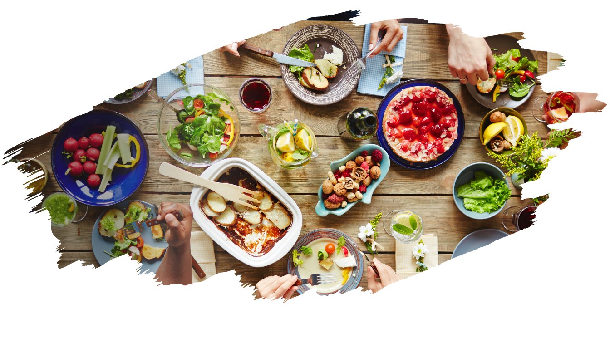
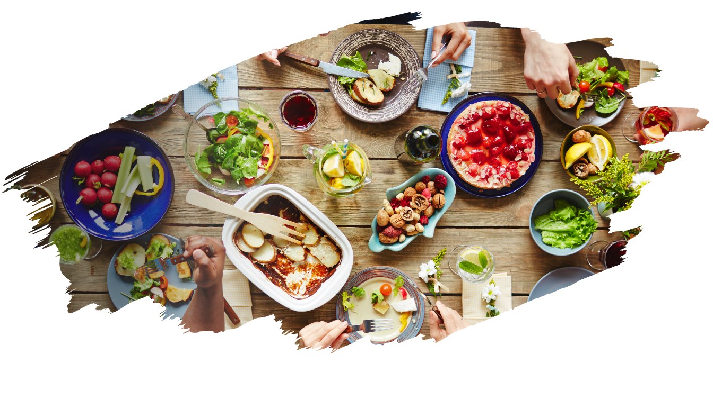
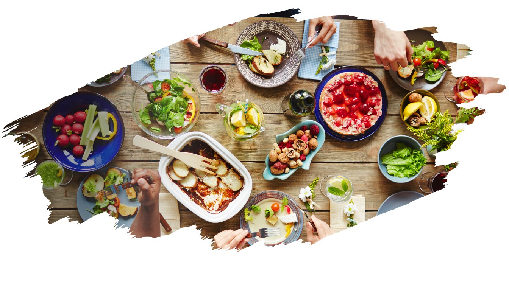

ようこそ
当システムは廃棄される食品を有効活用し、必要な方々に届けることを目指しています。飢餓や栄養不足を減らし、持続可能な社会を築くために、あなたのご協力が重要です。 一緒に食品ロスを減らし、食べ物を無駄にせずに必要な方々に支援しましょう。あなたの参加が、より良い未来をつくる一歩となります。 心温まる支援と共に、私たちのシステムに参加してくれることを心から歓迎いたします。ありがとうございます。

当システムは廃棄される食品を有効活用し、必要な方々に届けることを目指しています。飢餓や栄養不足を減らし、持続可能な社会を築くために、あなたのご協力が重要です。 一緒に食品ロスを減らし、食べ物を無駄にせずに必要な方々に支援しましょう。あなたの参加が、より良い未来をつくる一歩となります。 心温まる支援と共に、私たちのシステムに参加してくれることを心から歓迎いたします。ありがとうございます。